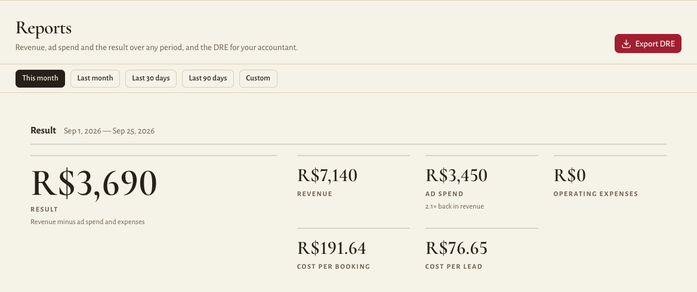
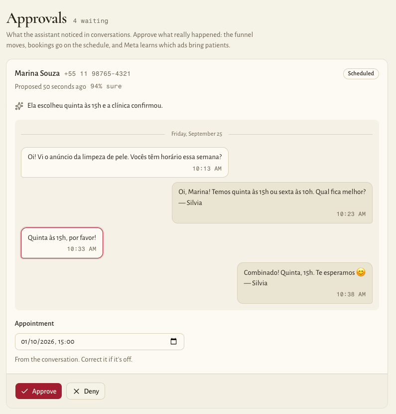

Ybyatã: Google Ads API tool design
Updated 25 September 2026 · Ybyata Growth Operations Ltda
What we use the API for. Two things, for the Google Ads accounts of the health clinics we manage under our manager account: reading what each campaign spent (reporting), and uploading offline click conversions when a lead the ad brought books or attends an appointment. We do not create, change or remove campaigns, ads, budgets or bids through the API.
Where it stands. The platform is built and runs on Google Cloud in São Paulo; the first client clinic is being onboarded. The screenshots below are the real product, with demonstration data (no real patients). This version replaces the one sent with our earlier application, which described an older version of the system.
1. Company and business model
Ybyatã Growth Operations (ybyata.com) is a Brazilian marketing agency and software company serving physiotherapy and other health clinics. Clinics pay a monthly fee. In exchange, Ybyatã runs their paid acquisition on Google Ads and Meta and operates the software that follows every lead from the ad click, through the WhatsApp conversation with the clinic's front desk, to a booked and attended appointment.
The Google Ads accounts of client clinics are linked under Ybyatã's manager account (MCC). Ybyatã's team operates them, in the Google Ads interface.
2. What the tool is
A web application hosted by Ybyatã on Google Cloud in São Paulo (southamerica-east1): an API service (Python) and a web app, on Cloud Run, with PostgreSQL on Cloud SQL. Every person signs in with an individual account. Each clinic is a tenant, and its data is isolated by PostgreSQL row-level security: the application connects as a database role that cannot bypass it.
The clinic's team uses it for their WhatsApp inbox, their schedule and their reports. Advertising data appears in one place: the Reports screen, where the clinic's owner sees what each campaign cost against the appointments it actually produced.

The Google Ads API is called only by background jobs of this application, never by end users, and always with Ybyatã's own credentials and developer token. No clinic user authenticates with Google. The tool is not sold or licensed to third parties.
3. API usage
3.1 Reporting (read)
Every six hours, for each linked account, a job runs one GoogleAdsService.SearchStream query at campaign level and re-reads the last seven days, since Google restates recent spend:
SELECT campaign.id, campaign.name, campaign.status,
metrics.cost_micros, segments.date
FROM campaign
WHERE segments.date BETWEEN '<7 days ago>' AND '<today>'
Results are stored per campaign per day, and feed the Reports screen: ad spend, the cost of each booking and of each lead, and the clinic's result (revenue minus ad spend and expenses).

3.2 Offline click conversions (write)
The clinic's landing page stores the click id (gclid, wbraid or gbraid) with the lead it captures. When that person books an appointment, or attends one, the platform records a conversion, and a job uploads it with ConversionUploadService.UploadClickConversions:
- the click id, the conversion action, the date and time, the currency and, when known, a value;
- when there is no click id: the person's phone number and e-mail, hashed with SHA-256, in user_identifiers (enhanced conversions for leads). Nothing else about the person is sent: no name, no conversation, no health information;
- our own event id as the order id, so a retried upload never counts twice.
A booking becomes a conversion only when a person on the clinic's team confirms it. The platform reads the WhatsApp conversation and proposes what happened; the team approves or corrects it:

Two conversion actions per account, "scheduled" and "attended", are created once by Ybyatã staff in the Google Ads interface. Conversions older than 90 days are not uploaded.
3.3 Not in scope
No campaign management: we do not create, edit, pause or remove campaigns, ad groups, ads, keywords, budgets or bids through the API, and there is no automated bidding or budget logic. Ybyatã's team manages campaigns in the Google Ads interface. If that ever changes, we will describe it to Google first.
4. Architecture and data flow
Clinic's landing page --lead + gclid--> Ybyatã platform (lead record)
WhatsApp Cloud API --webhook-------> Ybyatã platform (conversation, appointment)
Platform background jobs <----------> Google Ads API
every 6 h: SearchStream (spend per campaign per day)
from a queue: UploadClickConversions (booked / attended)
Ybyatã's developer token and OAuth refresh token,
login-customer-id = Ybyatã's manager account
Ybyatã platform ---> Reports for the clinic's owner, and for Ybyatã staff
Credentials: the developer token, OAuth client and refresh token are Ybyatã's, kept in Google Secret Manager and read by the server at runtime; they are never in the database or in the browser. Per-clinic Google data (the customer id and the conversion action ids) lives in the database with the clinic's other settings.
How personal data is handled:
- The database, files and the AI models the platform uses (Vertex AI) are all in São Paulo (southamerica-east1).
- The database is on a private IP, accepts TLS connections only, and is encrypted at rest by Cloud SQL. Each clinic's rows are isolated by row-level security.
- The access tokens clinics connect (WhatsApp, payments) are also encrypted by the application, with a key kept in Secret Manager. Photos and voice notes sit in a private bucket and are served only through the application.
- Ybyatã staff access to a clinic's data is read-only and audited. Access records are kept six months, as Brazilian law (Marco Civil da Internet) requires.
- Toward Google Ads, a patient's data leaves only as a click id or as SHA-256 hashes of phone and e-mail, attached to a conversion. Conversations and health information are never sent.
- The clinic is the controller of its patients' data and Ybyatã the processor, under Brazil's LGPD. Our privacy policy has the details.
5. Volume and rate limits
- Fewer than 10 linked accounts in the first year.
- Reporting: four SearchStream requests per account per day.
- Conversion uploads: a few dozen per account per day at most.
- Expected total: well under 1,000 operations per day. Transient errors (RESOURCE_EXHAUSTED, 5xx, network) are retried later with backoff; a rejected request is not retried.
6. Users and access
| Who | What they see | Google Ads data |
|---|---|---|
| Ybyatã staff | The clinics they manage. | Operate the linked accounts, in the Google Ads interface. |
| Clinic owners and managers | Their own clinic. | Spend and cost per booking for their own campaigns. |
| Clinic front desk | Conversations, schedule, approvals. | None. |
The tool is not offered to the general public.
7. Contact
Ybyata Growth Operations Ltda, CNPJ 68.452.751/0001-82, R. Pais Leme, 215, Conj. 1713, Pinheiros, São Paulo/SP, Brazil · google-ads-api@ybyata.com · contato@ybyata.com